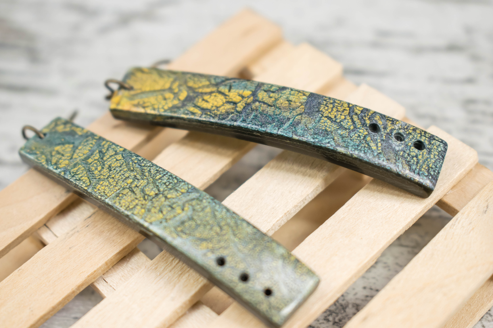
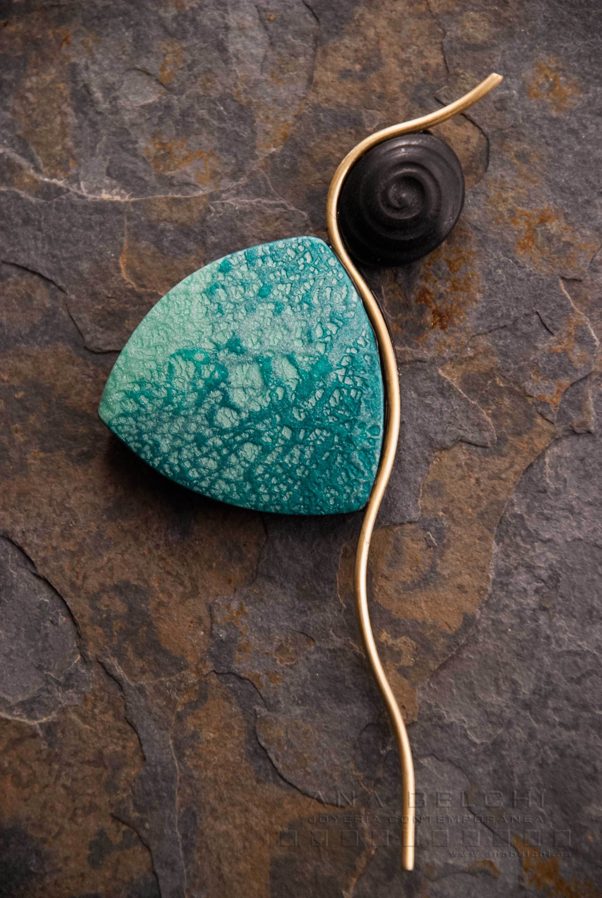
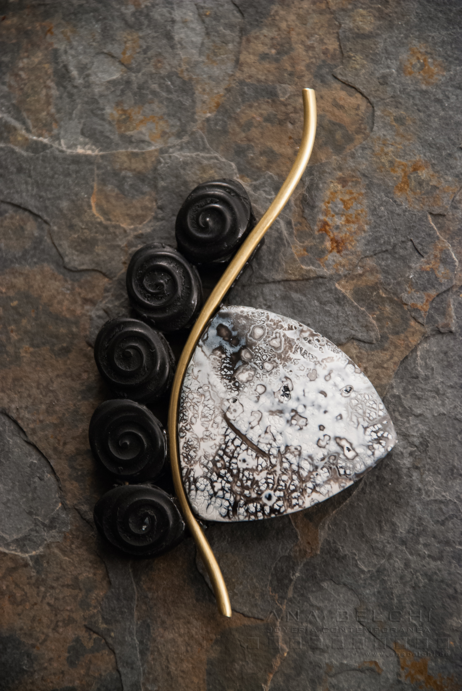

Cursos en Valence
Plug & Play
Primer día del fin de semana

Todos los niveles son bienvenidos
Plug&Play es un taller que surge de la necesidad y de las obsesiones:
De la necesidad de sobrevivir al confinamiento durante la pandemia del COVID19 y de la obsesión por ordenar mi taller durante esos meses.
Estanterías modulares, texturas y las ganas de explorar luna paleta de color saturada y vibrante fueron los puntos de partida esta pieza.

En este taller nos lanzaremos de cabeza a la exploración de diferentes texturas que usaremos para crear cuatro piezas de carácter geométrico y minimalista.
El montaje de esta pieza nos va a permitir cambiar la posición de cada uno de los elementos para crear un nuevo collar cada vez que queramos.

Los temas principales que trabajaremos en este taller serán:
- El proceso creativo
- La textura como elemento fundamental en el diseño
- El diseño modular
La duración de este taller es de 7 horas aproximadamente.

Nebulae
Primer día del fin de semana
Todos los niveles son bienvenidos
Las nebulosas son regiones del espacio interestelar formadas por elementos químicos gaseosos y en forma de polvo cósmico.

En este taller exploraremos mi técnica personal, “Nebulae”, centrada en la investigación del color, la textura y el craquelado como herramientas expresivas. A través de la mezcla de pigmentos y su combinación en función de las emociones que queramos transmitir, nos adentraremos en una práctica viva de la teoría del color.

Trabajaremos con arcillas metálicas y otros materiales para experimentar con acabados, superficies y efectos, poniendo especial atención en la armonía cromática y las posibilidades del craquelado. El proceso creativo será abierto, fomentando la creación de piezas de forma libre que permitan desarrollar un lenguaje propio.
Además, incorporaremos una técnica de generación de formas a partir de papel y lápiz, que servirá como punto de partida para diseñar composiciones originales y potenciar la creatividad.

Exploraremos conceptos clave como el equilibrio visual, el movimiento en la composición y la relación entre forma, color y textura, siempre desde una perspectiva práctica y experimental.
Este taller puede impartirse en clases de 7 horas.
